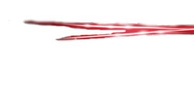
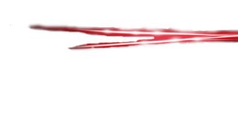

Vantagens Garibaldo
- Hot Ultra Infernal Blasts
Primeira Vantagem: Como foi dito antes nas características de Garibaldo [bico] (se você ainda não viu de uma olhada!), Garibaldo é capaz de lançar poderosas rajadas de energias pela boca, como ele aprendeu ainda é um mistério, mas a relatos que Garibaldo aprendeu a usar (Hot Ultra Infernal Blasts) com treinamentos em condições impossíveis para o ser humano conseguir viver!
Garibaldo X Barney
- AzulãoTransformação
Segunda Vantagem: Garibaldo após percebe que sua forma base não foi o suficiente para vencer seus inimigos, Garibaldo transforma sua energia ofensiva em energia transformativa, e Garibaldo invés de canaliza-lá no seu bico, ele a concentra em todo seu corpo, com isso ficando mais forte,Resistênte e rápido, porém Garibaldo só consegue ficar alguns minutos nessa forma, por consumir muita energia!O nome dessa transformação é Azulão.
Garibaldo X Barney
- Ilusionismo
Terceira Vantagem:Outra perigosa vantagem que Garibaldo possui é assustadora, Garibaldo possui em suas retinas uma substância feita de espiritualidade, no qual faz com que Garibaldo consiga prender a alma do seu inimigo em um mundo de ilusão, no qual só esta dentro da cabeça do mesmo! Garibaldo tortura, judia, maltrata, atormenta E FAZ OQUE ELE QUISER com seu inimigo, no qual faz com que ele enlouqueça ou se mate, até porque Garibaldo não pode matar ninguém nesse modo de ilusão, apenas se ele aproveitar o inimigo atordoado nesse estágio para mata-lo!,achas que esta seguro?